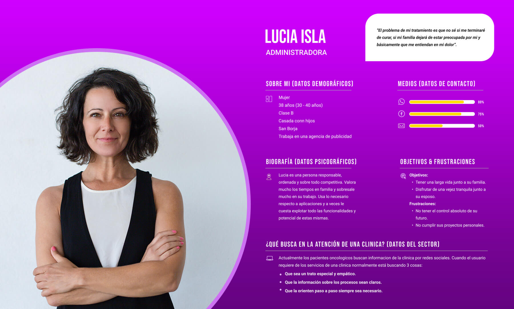
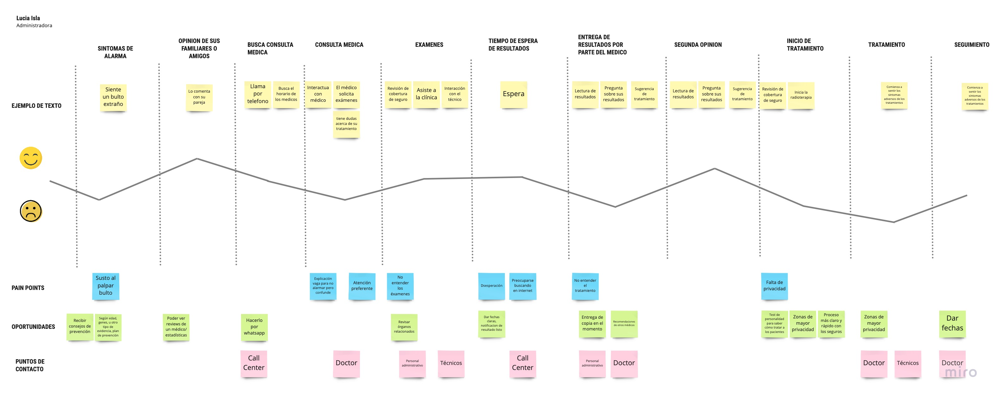
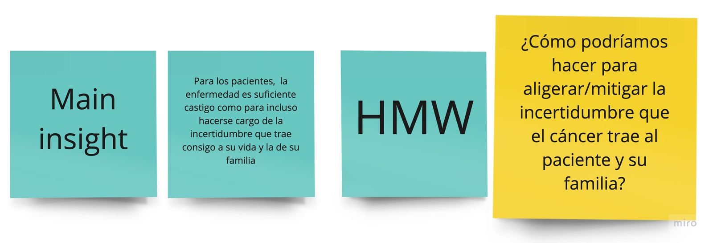

Actualmente, el Perú vive la 2da ola de la pandemia y todos los esfuerzos están enfocados a gestionar de la mejor manera las necesidades de pacientes con COVID-19 y evitar el contagio y propagación del virus. Mientras esto se da, las consultas generales y de especialidades médicas siguen brindando atención de forma presencial y online.
Salud
2 meses
Research - Ideacion - Prototipado

Proyecto ganador reto de diseño estrategico en Repensar Educativo
Debido a la pandemia la forma de trabajo en oficina a cambiado y ahora los trabajadores tienen que laborar desde sus casas y en algunas casos de forma hibrida. ¿Cómo las empresas se pueden adaptar a la nueva normalidad para mejorar la experiencia de sus trabajadores?
Trabajamos bajo la metodologia Lean UX enfocandonos inicialmente en la investigación de usuarios para luego sintetizar nuestros hallazgos, generar 2 propuestas de solucion y pasar rapidamente a iterar con los usuarios ideas
D e s c u b r i r
Para comprender el entorno de los pacientes oncologicios, iniciamos definiendo a nuestros stakeholders, para eso nos reunimos en equipo y comenzamos a definirlo en un diagrama.
Teniendo mas claro el problema que queremos resolver seguimos armando nuestro plan de investigación.

Teniendo definido nuestro plan de investigación y el mapa de Stakeholders pudimos tener acceso a pacientes oncológicos mediante la clínica para poder entrevistarlos.
Realizamos entrevistas a seis usuarios, algunos de ellos de la clinica san pablo y ademas tambien clientes de los principales clinicas nacionales. Los resultados obtenidos nos ayudaron a conocer y entender mejor el entorno, la competencia y el camino que tienen nuestros usuarios.
Desalentado
El 100% sintió que se iba a morir y no iba a realizar sus sueños.Desorientado
El 100% de los diagnosticados no sabía cómo proceder una vez enterado de su mal.Busca Apoyo
Todos los entrevistados buscaron apoyo en sus familiares y respaldo en cada decisión.Se Siente Solo
Todos los pacientes a pesar de tener familiares apoyándolos, sintieron soledad en todo el proceso.La Clínica
Los trámites siempre son engorrosos, estar enfermo y hacerlos es mucho peor, pero necesarios.Comunicación
A pesar de la confianza con el doctor, todos sintieron que no hablaban el mismo idioma.Para los pacientes, la enfermedad es suficiente castigo como para incluso hacerse cargo de la incertidumbre que trae consigo a su vida y la de su familia
E m p a t i z a r
Con las herramientas y los conocimientos descubiertos a partir de mi investigación, creé una persona que representa mejor el grupo de usuarios de esta función. Destaqué los objetivos, las frustraciones, las motivaciones y los canales de comunicación preferidos de esta persona.
Preparé un mapa de viaje para entender cómo Lucia usaría esta función nueva y agregada. Este mapa muestra las expectativas, los puntos de contacto, las intenciones, las acciones y los puntos débiles de Lucia.
I d e a c i ó n
Una vez que el equipo entendió a fondo los objetivos del proyecto, comenzamos a colaborar estrechamente y a desarrollar una solución.
La incertidumbre es el proceso que más afecta a los pacientes en cada día, decisión y sobre todo futuro. Tener la seguridad de que saldrán victoriosos de la batalla es un episodio clave de esta película de terror en la que se encuentran.
A pesar de tener familia que los apoyan, las fuerzas y el aliento nunca es suficiente. Tener la información correcta de cómo actuar frente a las situaciones, cómo buscar fuerzas y de donde sacarla es la constante variable de cada paciente.

EL PACIENTE ONCOLÓGICO NECESITA
ESPERANZAPresentamos a ZOE
Zona Oncológica Esperanza
Zoe es una aplicación que la puedes descargar en tu celular.
Zoe es una comunidad que une pacientes oncológicos.

Zoe es una herramienta que ayuda a tener la seguridad de saber cuál es el mal que te afecta y sobre todo en qué situación te encuentras.
 Mi Camino
Mi Camino
Brindar información sobre el
estado del paciente
Comunicar triunfos, tips, datos importantes que disipan dudas.
 Comunidad
Comunidad
Crear una red de bienestar donde comparten a través de foros
Puedes interactuar pulsando en el celular
Con este proyecto me llevo a entender el camino que tiene un paciente oncológico el cual no es nada fácil y muchas veces no es muy bien comprendido incluso en el círculo más cercano que ellos tienen. Es por eso que los usuarios oncológicos necesitan sentirse escuchados y recibir animo positivo, los cuales reflejamos en la propuesta de solución.
Como aprendizaje personal puedo rescatar que al momento de las entrevistas sabia que el perfil de usuarios hiba a ser un reto nuevo para mí ya que hablar sobre temas delicados como su estado de salud podría tocar fibras en los sentimientos del usuario, para superar esto dedique parte de mi tiempo a leer articulos sobre como los especialistas oncológicos se preparaban para tratar con sus pacientes lo cual me dio una idea de como tendría que comunicarme con mis usuarios.
Para terminar quiero dar gracias al equipo de Repensar Educativo y al Grupo San Pablo por el proyecto y gracias a mis compañeros de equipo Carolina Garcia, Caro Ortiz y Natalia Romero por ser un gran equipo logramos los objetivos que nos propusimos y siempre con mira a poder mejorar nuestro producto.